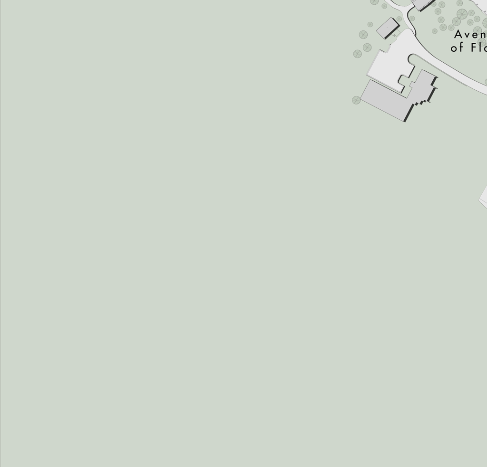
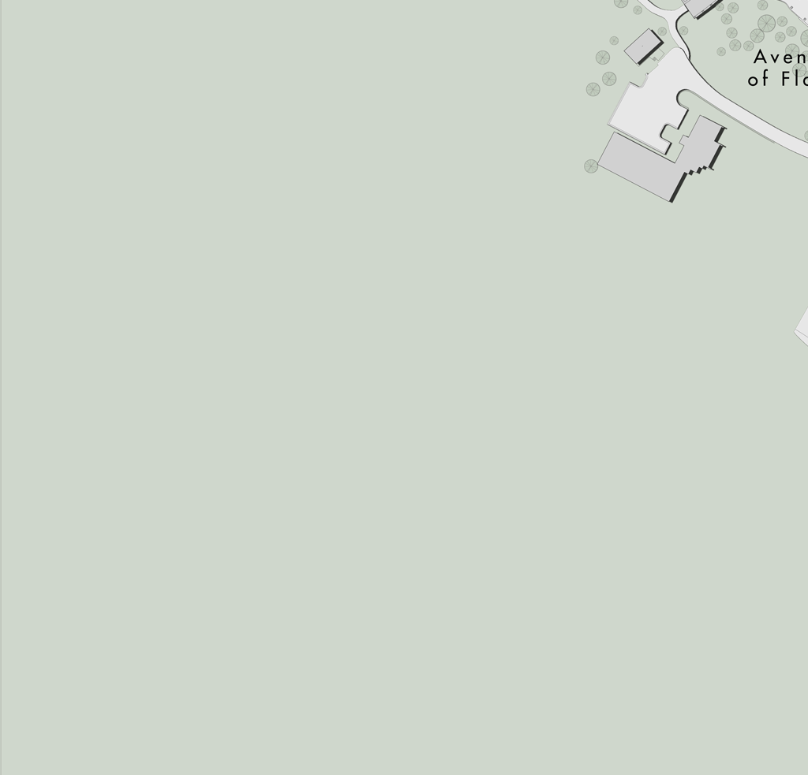

The Digital Preservation of Mount Rushmore National Memorial was undertaken by the National Park service in collaboration with the Kacyra Family Foundation's CyArk project and the Centre for Digital Documentation and Visualisation (CDDV).
Field Documentation at Mount Rushmore, including laser scanning and photography, took place in May of 2010. All the data collected has been used to create a variety of media for digital preservation. This media will be used for the on-going preservation and conservation of the mountain and for public education and interpretation of the memorial.
The National Park Service (NPS) was created by an act of Congress in 1916. Today, it cares for and makes available for public enjoyment, education, and inspiration a nationwide system of parks, monuments, historic sites, and recreational areas. With the help of partners and the American people, NPS safeguards these special scenic, historic, and cultural places, sharing their stories with hundreds of millions of visitors every year.
Mount Rushmore was designated as a National Memorial in 1925 and it has been in the care of the National Park Service since 1933 where its mission has been to preserve and protect Mount Rushmore National Memorial while providing for the education and enjoyment of the public.
Originally a project of the Kacyra Family Foundation (KFF), CyArk is now an independent 501c3 nonprofit organization with the mission of digitally preserving cultural heritage sites through collecting, archiving, and providing open access to data created by laser scanning, digital modeling, and other state-of-the-art technologies.
KFF/CyArk is working with the National Parks Service at the Mount Rushmore National Memorial in a multi-year project. The first phase of this project was the digital preservation of Mount Rushmore through laser scanning, High Dynamic Range photography (HDR), and other state-of-the-art technologies. With the data collected, KFF/CyArk has been working to create a complete digital model of the Mountain, drawings and other multimedia to be used by the park for conservation, and educational content to be used at the park and in classrooms everywhere. The content within this app, and much more, are available for free online viewing at
CyArk website. If you like this free app, and would like to support us, consider
donating to our cause.
The Centre for Digital Documentation and Visualisation is a new commercial partnership between Historic Scotland and the Glasgow School of Art's Digital Design Studio - using state-of-the-art laser scanning technology and 3D visualisation software to digitally record heritage sites around the globe and enable virtual access. The Centre grew from the Scottish Ten, a project launched in 2009 to digitally document Scotland's five World Heritage Sites in addition to five international World Heritage Sites.


HELP
Viewing the Historical Slideshow: Touch a slide and drag your finger to the left or right. You may use the same movements to move through the rest of the Slideshow.
Accessing the Digital Archive: Touch the four buttons along the bottom of the screen and you will be taken to that area of the Digital Archive. For example, if you would like to see the Virtual Tour of Mount Rushmore, touch the button that says "Virtual Tour." You may explore the areas of the Digital Archive in any order.
Navigating the Galleries of "Images" and "Videos": Click the images within the Galleries. For Images, there are three galleries to choose from. When you see the image, click the left and right arrow buttons to flip through the available images
Exploring the Virtual Tour: "Double Tap" to zoom in and out on the map. Click the icons to see panoramic images taken at different locations around Mount Rushmore. Within each panoramic image, you can drag your finger around to see the full panorama. You can also jump to other panoramas by clicking the hotspots within each panorama. When you see the panoramic image, you can click (Touch Mode) and drag your finger to see the full panorama, or click (Motion Mode), and physically rotate the iPad around your body to see the full panorama.


Show Caption
Mount Rushmore, also known as the Shrine of Democracy, is a National Memorial depicting four of the most prominent presidents of the first 150 years of the United States - George Washington, Abraham Lincoln, Theodore Roosevelt, and Thomas Jefferson. Mount Rushmore was carved into South Dakota's Black Hills from 1927 to 1941 under the direction of sculptor Gutzon Borglum. The project took a team of 400 drillers and assistant carvers fourteen years to complete. Over 1.7 billion pounds of stone were removed using dynamite, detailed drilling, and finishing processes.
George Washington, first president of the United States, led the early colonists in the American Revolutionary War to win independence from Great Britain. He was the father of the new country and laid the foundation of American democracy. Because of his importance, Washington is the most prominent figure on the mountain (1732-1799). George Washington's sculpture was started first on the mountain and dedicated on Independence Day in 1934.
Thomas Jefferson, third president of the United States, was the author of the Declaration of Independence, a document which inspires democracies around the world. He also purchased the Louisiana Territory from France in 1803 which doubled the size of our country, adding all or part of fifteen present-day states (1743-1826). Thomas Jefferson's sculpture was started second on the mountain. Originally, the sculpture was started to the left of Washington but was later blasted off because of poor rock quality. A second Jefferson sculpture was started to the right of Washington and dedicated in 1936.
Abraham Lincoln, the 16th president of the United States, held the nation together during its greatest trial, the Civil War. Lincoln believed his most sacred duty was the preservation of the union. It was his firm conviction that slavery must be abolished (1809-1865). Abraham Lincoln's sculpture was started third on the mountain and was placed on the far right side of the cliff. The dedication ceremony took place on September 17, 1937, the 150th anniversary of the signing of the Constitution of the United States in 1787.
Theodore Roosevelt, 26th president of the United States, provided leadership when America experienced rapid economic growth as it entered the 20th Century. He was instrumental in negotiating the construction of the Panama Canal, linking the east and the west. He was known as the "trust buster" for his work to end large corporate monopolies and ensure the rights of the common working man (1858-1919). Theodore Roosevelt's sculpture was started fourth and had to be cut deeper into the mountain where there was better granite. The dedication ceremony took place on July 2, 1939.
Located along the small canyon behind the Mountain Sculpture, the Hall of Records is an unfinished chamber which was intended by sculptor Gutzon Borglum to be a repository of the American Story. Construction of the hall took place between July 1938 and July 1939, when a 70-foot tunnel was blasted into the mountain. It remains very roughly cut, and tapers to a point at the back. Work halted in 1939 when Congress directed that construction should be executed only on the faces. With Borglum's death in 1941 and American involvement in World War II, all work on the memorial came to a close on October 31, 1941.
Close Caption


 Show Caption
Show Caption
CyArk founder, Ben Kacyra, speaks from the Sculptor's Studio at Mount Rushmore National Memorial about the importance of safeguarding our collective history by digitally preserving imporant cultural heritage monuments. Film by Mike Brooks of Historic Scotland. Music:
Digital Preservation is a process that utilizes new technologies in surveying and imaging to document heritage sites in 3D and to accuracies that were never-before possible. The core technology is the portable 3D laser scanner, which was developed by CyArk founder, Ben Kacyra. Music:
In May of 2010, the National Park Service collaborated with CyArk and the Centre for Digital Documentation and Visualisation to laser scan the entire Mount Rushmore sculpture in order to create the most accurate model of it to-date. The resulting materials also allow for virtual tourism and new educational content which is freely accessible at
CyArk's Mount Rushmore Portal.
Music:
and
"Double Tap" to zoom in/out
Tap a

to view the Panoramic Image
(Tap to close)
Virtual tour audio narration by Brian W. Roberts


 
